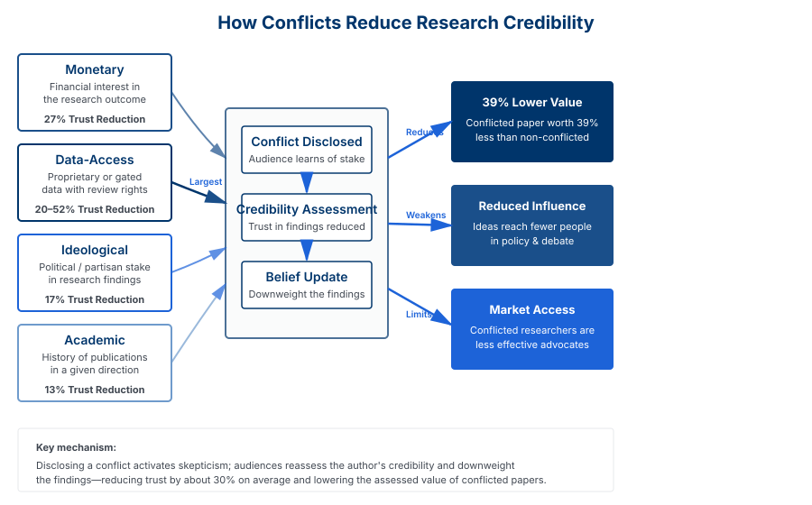

Abstract
We examine how conflicts of interest (CoI)—financial, professional, or ideological stakes held by authors—affect the perceived credibility of economics research. Using a randomized survey of economists and the US public, we investigate how audiences react to research findings when the author is revealed to have interests in the outcome.
Our findings reveal a significant "conflict-of-interest discount" in the marketplace of ideas: disclosure of conflicts reduces trust in research findings by 28%, with substantial variation by conflict type. We model the "CoI Discount," estimating that conflicted papers are worth 39% less than non-conflicted ones. These findings are validated through disclosure and citation analysis, a medical meta-analysis, and large-language model simulations. Our results highlight a credibility gap in economics research that is not eliminated by current disclosure practices.
Key Findings
Conflict Discount Magnitude
Disclosure of conflicts of interest reduces the value of academic papers by 39% on average, with substantial variation by conflict type: monetary conflicts reduce trust by 27%, data-access conflicts by 20-52%, and ideological conflicts by 17%. The discount is most pronounced for papers relying on gated data with a right to review (58%), and lowest for academic conflicts (13%).
Credibility Assessment
Audiences substantially downgrade perceived speaker credibility and expertise when conflicts are disclosed. On average, conflict-of-interest disclosure reduces trust in research by approximately 28-30% across different respondent groups, regardless of the validity of the underlying argument.
Type of Conflict Matters
Financial conflicts produce larger credibility reductions than professional conflicts, and undisclosed conflicts discovered later produce even larger discount effects.
Information Environment Effects
Conflict disclosures reduce idea influence more in less informed audiences, suggesting that disclosure creates asymmetric information effects on belief formation.
Figure 1: Conflict Discount by Type

Figure 2: Mechanism—How Conflicts Reduce Research Credibility

Research Contribution
This paper contributes to understanding how disclosure requirements affect information markets and public discourse. We demonstrate that requiring conflict disclosure, while important for transparency, creates substantial credibility costs that may reduce the influence of ideas from interested parties.
Our findings have implications for understanding corporate communications policy, expert witness credibility, scientific disclosure requirements, and media coverage of interested parties. The results suggest that disclosure requirements involve meaningful trade-offs between transparency and the ability of interested parties to participate effectively in public discourse.